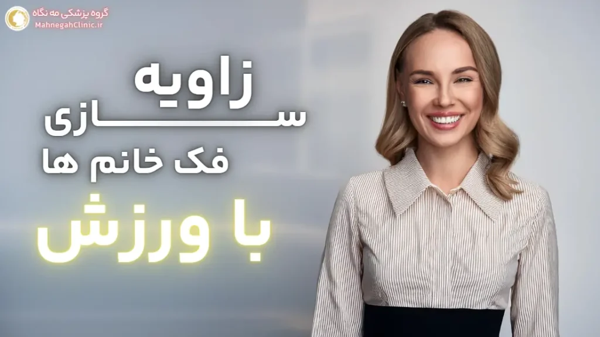
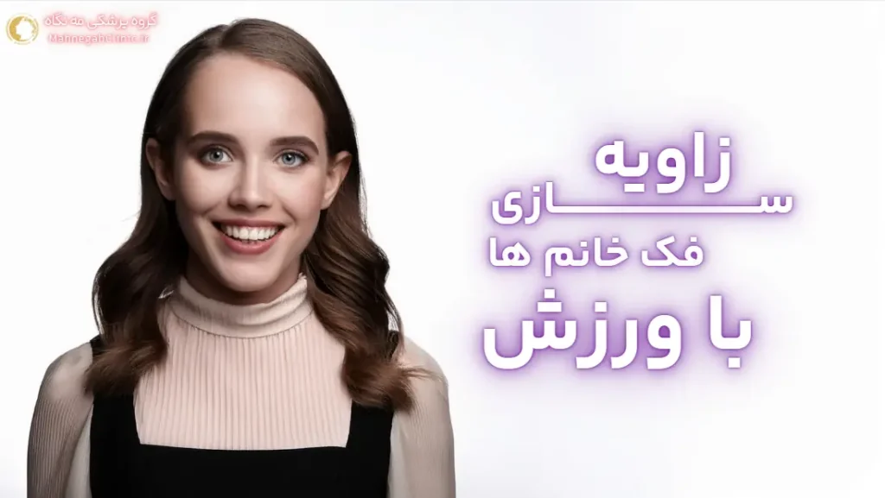

خانه / مجله / زاویه سازی فک
ورزش برای زاویه سازی فک زنان: 8 اصل اساسی

1. زاویه سازی فک با ورزش: آیا برای زنان موثر است؟
ورزش برای زاویه سازی فک زنان سوالی خیلی از ماست. داشتن یک فک خوشتراش و زاویهدار، یکی از معیارهای زیبایی صورت در بسیاری از فرهنگها محسوب میشود. در حالی که روشهای پزشکی مانند تزریق فیلر و جراحی برای زاویه سازی فک وجود دارند، برخی از زنان به دنبال روشهای طبیعیتر و کمتهاجمتری مانند ورزش هستند.
اما آیا ورزش واقعاً میتواند به زاویه سازی فک در زنان کمک کند؟ در این بخش، به بررسی تاثیر ورزش بر عضلات فک و صورت زنان و انتظارات واقعبینانه از این روش میپردازیم.
تاثیر ورزش بر عضلات فک و صورت زنان
عضلات صورت و فک، مانند سایر عضلات بدن، قابلیت تقویت و رشد دارند. انجام تمرینات منظم و هدفمند میتواند به تقویت این عضلات و بهبود ظاهر فک کمک کند. این تمرینات میتوانند به موارد زیر کمک کنند:
- تقویت عضلات جونده: عضلات جونده (ماستر) در دو طرف فک قرار دارند و مسئول جویدن هستند. تقویت این عضلات میتواند به برجستهتر شدن خط فک کمک کند.
- کاهش چربی صورت: برخی تمرینات صورت میتوانند به افزایش جریان خون و سوختوساز در ناحیه صورت کمک کنند که ممکن است به کاهش چربیهای زیرپوستی و در نتیجه، بهبود خط فک منجر شود.
- بهبود وضعیت قرارگیری سر و گردن: تمرینات گردن و شانهها میتوانند به بهبود وضعیت قرارگیری سر و گردن کمک کنند که میتواند به طور غیرمستقیم بر ظاهر فک تأثیر بگذارد و آن را برجستهتر نشان دهد.
انتظارات واقع بینانه از ورزش برای زاویه سازی فک
اگرچه ورزش میتواند به بهبود ظاهر فک کمک کند، اما نباید انتظار نتایج معجزهآسا و فوری داشت. تاثیر ورزش بر زاویه سازی فک معمولاً تدریجی است و نیاز به صبر، استمرار و انجام صحیح تمرینات دارد. همچنین، میزان تأثیر ورزش به عوامل دیگری مانند ژنتیک، سن، ساختار استخوانی و درصد چربی بدن نیز بستگی دارد.
به طور کلی، ورزش میتواند به عنوان یک روش مکمل و کمهزینه برای بهبود ظاهر فک و صورت در زنان در نظر گرفته شود، اما نمیتواند جایگزین روشهای پزشکی مانند تزریق فیلر یا جراحی شود.
اگر به دنبال نتایج سریع و چشمگیر هستید یا دچار ناهنجاریهای فک هستید، بهتر است با یک پزشک متخصص مشورت کنید و گزینههای درمانی مناسب را بررسی کنید.
2. بهترین ورزش ها برای زاویه سازی فک زنان
ورزشهای صورت میتوانند به تقویت و خوشفرم شدن عضلات صورت و فک کمک کنند. این تمرینات علاوه بر زاویهسازی فک، میتوانند به کاهش چین و چروک، بهبود گردش خون و ایجاد ظاهری جوانتر در صورت نیز کمک کنند. در ادامه به برخی از بهترین ورزشها برای زاویه سازی فک زنان اشاره میکنیم:
تمرینات مخصوص تقویت عضلات جونده
- جویدن آدامس: یکی از سادهترین و در دسترسترین تمرینات برای تقویت عضلات جونده، جویدن آدامس بدون قند است. سعی کنید روزانه به مدت 15-20 دقیقه آدامس بجوید. این کار به تقویت عضلات جونده و برجستهتر شدن خط فک کمک میکند.
- تمرین بلند کردن چانه: سر خود را به عقب خم کنید و به سقف نگاه کنید. سپس، لب پایین خود را به سمت بالا بکشید و سعی کنید چانه خود را به سمت سقف بلند کنید. این حالت را برای 5-10 ثانیه نگه دارید و سپس به حالت اولیه بازگردید. این تمرین را در 3 ست 10-15 تکراری انجام دهید.
- تمرین غنچه کردن لب: لبهای خود را غنچه کنید و سعی کنید آنها را به سمت جلو فشار دهید، گویی میخواهید کسی را ببوسید. این حالت را برای 5-10 ثانیه نگه دارید و سپس به حالت اولیه بازگردید. این تمرین را در 3 ست 10-15 تکراری انجام دهید.
- تمرین حرکت فک به طرفین: فک پایین خود را به آرامی به سمت راست و سپس به سمت چپ حرکت دهید. این حرکت را 10-15 بار در هر طرف تکرار کنید. این تمرین به تقویت عضلات جانبی فک کمک میکند و میتواند به بهبود تقارن صورت نیز کمک کند.
تمرینات کششی و ماساژ صورت برای زنان
- ماساژ عضلات فک: با استفاده از نوک انگشتان، عضلات فک و اطراف آن را به آرامی ماساژ دهید. این کار به افزایش گردش خون و شل شدن عضلات کمک میکند و میتواند به کاهش تنش و درد در فک نیز کمک کند.
- کشش گردن: سر خود را به آرامی به سمت راست و سپس به سمت چپ خم کنید و هر حالت را برای 15-20 ثانیه نگه دارید. این کار به کشش عضلات گردن و بهبود وضعیت قرارگیری سر کمک میکند که میتواند به طور غیرمستقیم بر ظاهر فک تأثیر بگذارد.
- کشش زبان: زبان خود را تا جایی که میتوانید به سمت بیرون بکشید و این حالت را برای 10 ثانیه نگه دارید. این کار به کشش عضلات زیر چانه و بهبود خط فک کمک میکند.
- تمرین لبخند: یک لبخند بزرگ بزنید و سعی کنید گوشههای لب خود را تا جایی که میتوانید به سمت بالا بکشید. این حالت را برای 5-10 ثانیه نگه دارید و سپس به حالت اولیه بازگردید. این تمرین به تقویت عضلات گونه و اطراف فک کمک میکند.
نکته: این تمرینات را به طور منظم و حداقل 3-4 بار در هفته انجام دهید تا بهترین نتایج را بگیرید. همچنین، میتوانید با یک متخصص زیبایی یا فیزیوتراپیست مشورت کنید تا تمرینات مناسب برای نیازها و شرایط خاص شما را پیشنهاد دهند.

3. نکات مهم در انجام ورزش های زاویه سازی فک برای زنان
برای دستیابی به بهترین نتایج و جلوگیری از آسیبهای احتمالی در حین انجام تمرینات زاویه سازی فک، رعایت برخی نکات ضروری است. در ادامه به مهمترین این نکات میپردازیم:
گرم کردن و سرد کردن قبل و بعد از تمرین
- گرم کردن: قبل از شروع تمرینات، عضلات فک و صورت را با حرکات ملایم و ماساژ گرم کنید. این کار به افزایش جریان خون و انعطافپذیری عضلات کمک میکند و خطر آسیب را کاهش میدهد. میتوانید با حرکات چرخشی سر و گردن، باز و بسته کردن آرام فک و ماساژ ملایم صورت با نوک انگشتان، عضلات را گرم کنید.
- سرد کردن: پس از پایان تمرینات، عضلات را با حرکات کششی ملایم و ماساژ سرد کنید. این کار به کاهش درد و التهاب عضلانی کمک میکند و روند بهبودی را تسریع میکند. میتوانید با تکرار حرکات کششی گردن و ماساژ آرام صورت با استفاده از یک حوله سرد، عضلات را سرد کنید.
- در این مقاله از وبسایت معتبر Health Line Media پنج روش موثر آمده است.
تکرار و استمرار: کلید موفقیت
- تکرار: هر تمرین را به تعداد مشخص شده تکرار کنید و به تدریج تعداد تکرارها را افزایش دهید. اما به یاد داشته باشید که کیفیت تمرینات از کمیت آنها مهمتر است. بهتر است تمرینات را با دقت و تمرکز کامل انجام دهید تا عضلات به درستی درگیر شوند.
- استمرار: برای دیدن نتایج قابل توجه، باید تمرینات را به طور منظم و مستمر انجام دهید. حداقل 3 تا 4 بار در هفته به تمرینات بپردازید و صبور باشید. نتایج ممکن است چند هفته یا حتی چند ماه طول بکشد تا ظاهر شوند، اما با پشتکار و مداومت، میتوانید به نتایج دلخواه خود برسید.
سایر نکات مهم:
- تکنیک صحیح: انجام صحیح تمرینات بسیار مهم است. اگر مطمئن نیستید که چگونه یک تمرین را به درستی انجام دهید، میتوانید از فیلمهای آموزشی یا راهنمایی یک متخصص استفاده کنید. انجام نادرست تمرینات نه تنها موثر نخواهد بود، بلکه ممکن است باعث آسیب به عضلات یا مفاصل شود.
- گوش دادن به بدن: اگر در حین تمرین احساس درد یا ناراحتی کردید، تمرین را متوقف کنید و به بدن خود استراحت دهید. درد میتواند نشانهای از آسیب باشد و ادامه تمرین میتواند مشکل را تشدید کند.
- تنوع تمرینات: برای جلوگیری از خستگی و آسیب، تمرینات خود را متنوع کنید و از تمرین دادن بیش از حد یک گروه عضلانی خودداری کنید. با تغییر تمرینات، میتوانید تمام عضلات صورت و فک را به طور متعادل تقویت کنید.
- ترکیب با سایر روشها: برای بهبود نتایج، میتوانید ورزش را با سایر روشهای طبیعی مانند رژیم غذایی سالم و کاهش وزن ترکیب کنید. یک رویکرد جامع به شما کمک میکند تا به بهترین شکل ممکن به اهداف زیبایی خود برسید.
- مشاوره با متخصص: اگر در مورد انجام تمرینات یا هر گونه سوال یا نگرانی دارید، با یک متخصص زیبایی یا فیزیوتراپیست مشورت کنید. آنها میتوانند به شما در طراحی یک برنامه ورزشی مناسب و ایمن کمک کنند.
با رعایت این نکات و انجام صحیح و مستمر تمرینات، میتوانید به بهبود خط فک و ایجاد ظاهری خوشتراشتر در چهره خود کمک کنید. به یاد داشته باشید که صبر، استمرار و تکنیک صحیح کلید موفقیت در این مسیر هستند.
4. رژیم غذایی و زاویه سازی فک در زنان
رژیم غذایی نقش مهمی در سلامت و زیبایی کلی بدن، از جمله صورت و فک، ایفا میکند. انتخاب مواد غذایی مناسب و پرهیز از غذاهای مضر میتواند به تقویت عضلات فک، کاهش چربیهای صورت و در نتیجه، بهبود خط فک در زنان کمک کند.
مواد غذایی مفید برای تقویت عضلات فک و صورت
- پروتئین: پروتئین برای ساخت و ترمیم عضلات ضروری است. مصرف کافی پروتئین از منابعی مانند گوشت، مرغ، ماهی، تخم مرغ، حبوبات و لبنیات به تقویت عضلات فک و صورت کمک میکند و به آنها فرم و حجم بیشتری میبخشد.
- کلسیم: کلسیم برای سلامت استخوانها و دندانها ضروری است و میتواند به طور غیرمستقیم بر قدرت و ظاهر فک تأثیر بگذارد. منابع خوب کلسیم شامل لبنیات، سبزیجات برگ سبز تیره، بادام و کنجد است.
- ویتامین C: ویتامین C به تولید کلاژن کمک میکند که برای حفظ استحکام و خاصیت ارتجاعی پوست ضروری است. مصرف کافی ویتامین C از منابعی مانند مرکبات، توت فرنگی، کیوی و فلفل دلمهای به بهبود ظاهر پوست و کاهش افتادگی آن کمک میکند که میتواند به برجستهتر شدن خط فک کمک کند.
- آب: نوشیدن آب کافی برای حفظ هیدراتاسیون بدن و پوست ضروری است. پوست هیدراته، سفتتر و جوانتر به نظر میرسد و میتواند به بهبود خط فک و کاهش پف صورت کمک کند.
- میوهها و سبزیجات تازه: این مواد غذایی حاوی آنتیاکسیدانها و ویتامینهای ضروری هستند که به سلامت پوست و عضلات کمک میکنند و میتوانند به بهبود ظاهر فک و صورت کمک کنند.
پرهیز از غذاهای مضر برای زیبایی فک
- غذاهای فرآوری شده: غذاهای فرآوری شده معمولاً حاوی مقادیر زیادی سدیم، شکر و چربیهای ناسالم هستند که میتوانند باعث احتباس آب و افزایش وزن شوند و بر ظاهر فک تأثیر منفی بگذارند.
- نوشیدنیهای شیرین: نوشیدنیهای شیرین مانند نوشابهها و آبمیوههای صنعتی، حاوی کالری و قند زیادی هستند که میتوانند باعث افزایش وزن و تجمع چربی در صورت شوند و خط فک را نامشخص کنند.
- الکل: مصرف الکل میتواند باعث دهیدراتاسیون و التهاب شود که میتواند بر ظاهر پوست و فک تأثیر منفی بگذارد و باعث پف کردن صورت و کاهش وضوح خط فک شود.
- نمک زیاد: مصرف زیاد نمک میتواند باعث احتباس آب و پف کردن صورت شود که میتواند خط فک را کمتر مشخص کند. سعی کنید مصرف نمک خود را کاهش دهید و از غذاهای فرآوری شده که معمولاً حاوی مقادیر زیادی سدیم هستند، خودداری کنید.
با رعایت یک رژیم غذایی سالم و متعادل و کاهش مصرف غذاهای مضر، میتوانید به تقویت عضلات فک، کاهش چربیهای صورت و بهبود خط فک خود کمک کنید. این تغییرات در رژیم غذایی، در کنار ورزشهای منظم، میتوانند نتایج قابل توجهی در زاویه سازی فک شما ایجاد کنند و به شما کمک کنند تا به ظاهری جوانتر و شادابتر دست یابید.

5. سایر روش های طبیعی برای زاویه سازی فک در زنان
علاوه بر ورزش و رژیم غذایی، روشهای طبیعی دیگری نیز وجود دارند که میتوانند به بهبود خط فک و ایجاد ظاهری خوشتراشتر در زنان کمک کنند. این روشها معمولاً کمهزینه، غیرتهاجمی و بدون عوارض جانبی جدی هستند و میتوانند به عنوان مکمل تمرینات ورزشی مورد استفاده قرار گیرند. در ادامه به برخی از این روشها میپردازیم:
کاهش وزن و تاثیر آن بر زاویه فک
علاوه بر ورزش و رژیم غذایی، روشهای طبیعی دیگری نیز وجود دارند که میتوانند به بهبود خط فک و ایجاد ظاهری خوشتراشتر در زنان کمک کنند. این روشها معمولاً کمهزینه، غیرتهاجمی و بدون عوارض جانبی جدی هستند و میتوانند به عنوان مکمل تمرینات ورزشی مورد استفاده قرار گیرند. در ادامه به برخی از این روشها میپردازیم:
اهمیت خواب کافی و وضعیت صحیح خوابیدن
خواب کافی و با کیفیت برای سلامت کلی بدن و همچنین ظاهر پوست و صورت ضروری است. کمبود خواب میتواند باعث احتباس آب و پف کردن صورت شود که میتواند خط فک را کمتر مشخص کند. همچنین، وضعیت صحیح خوابیدن نیز مهم است. سعی کنید به پشت بخوابید و از خوابیدن روی شکم یا پهلو که میتواند باعث ایجاد چین و چروک و افتادگی پوست شود، خودداری کنید. خوابیدن به پشت به حفظ حالت طبیعی صورت و جلوگیری از فشار بر روی فک کمک میکند.
سایر روشهای طبیعی برای زاویه سازی فک در زنان:
- مصرف آب کافی: نوشیدن آب کافی به حفظ هیدراتاسیون بدن و پوست کمک میکند و میتواند به کاهش پف صورت و بهبود خط فک کمک کند. روزانه حداقل 8 لیوان آب بنوشید و از مصرف نوشیدنیهای شیرین و الکلی که میتوانند باعث دهیدراتاسیون شوند، خودداری کنید.
- کاهش مصرف نمک: مصرف زیاد نمک میتواند باعث احتباس آب و پف کردن صورت شود که میتواند خط فک را کمتر مشخص کند. سعی کنید مصرف نمک خود را کاهش دهید و از غذاهای فرآوری شده که معمولاً حاوی مقادیر زیادی سدیم هستند، خودداری کنید.
- مراقبت از پوست: استفاده از محصولات مراقبت از پوست مناسب میتواند به حفظ استحکام و خاصیت ارتجاعی پوست کمک کند و از افتادگی آن جلوگیری کند. استفاده از مرطوبکنندهها، سرمها و کرمهای ضد آفتاب به حفظ سلامت و جوانی پوست کمک میکند و میتواند به طور غیرمستقیم بر ظاهر فک تأثیر بگذارد.
- آرایش کانتورینگ: تکنیکهای آرایش کانتورینگ میتوانند به طور موقت به ایجاد خط فک برجستهتر کمک کنند. با استفاده از سایهها و هایلایتها، میتوانید خط فک خود را تعریف کنید و آن را برجستهتر نشان دهید. با این حال، این روش موقتی است و نیاز به مهارت و تمرین دارد.
ترکیب این روشهای طبیعی با ورزش و رژیم غذایی سالم میتواند به شما در دستیابی به زاویه فک دلخواه و ظاهری جوانتر و شادابتر کمک کند. به یاد داشته باشید که صبر، استمرار و پیروی از یک رویکرد جامع کلید موفقیت در این مسیر هستند.
6. مقایسه ورزش با سایر روش های زاویه سازی فک برای زنان
در دنیای امروز، گزینههای زیادی برای زاویه سازی فک وجود دارد، از روشهای طبیعی مانند ورزش گرفته تا روشهای پزشکی مانند تزریق فیلر و جراحی. هر یک از این روشها مزایا و معایب خاص خود را دارند و انتخاب بهترین گزینه به نیازها، ترجیحات و شرایط هر فرد بستگی دارد. در این بخش، به مقایسه ورزش با سایر روشهای زاویه سازی فک برای زنان میپردازیم.
مزایا و معایب ورزش در مقایسه با روش های پزشکی
| روش | مزایا | معایب |
|---|---|---|
| ورزش | کمهزینه، غیرتهاجمی، بدون عوارض جانبی جدی، بهبود سلامت کلی بدن، قابل انجام در خانه | نتایج تدریجی و محدود، نیاز به استمرار و صبر، تاثیرگذاری وابسته به عوامل ژنتیکی و سبک زندگی |
| تزریق ژل | نتایج فوری و قابل پیشبینی، غیرجراحی، کمتهاجمی، دوره نقاهت کوتاه، قابل تنظیم | هزینه بالاتر، نیاز به تزریق مجدد در طول زمان، احتمال واکنشهای آلرژیک، نیاز به تخصص پزشک |
| تزریق چربی | نتایج طبیعی و ماندگار، استفاده از بافت طبیعی بدن، جوانسازی پوست | نیاز به جراحی و برداشت چربی، دوره نقاهت طولانیتر، احتمال جذب بخشی از چربی تزریق شده، هزینه بالاتر |
| جراحی | نتایج دائمی و چشمگیر، اصلاح ناهنجاریهای فک | تهاجمی، نیاز به بیهوشی، دوره نقاهت طولانی، هزینه بالا، عوارض جانبی احتمالی |
چه زمانی به پزشک مراجعه کنیم؟
- اگر به دنبال نتایج سریع و چشمگیر هستید: روشهای پزشکی مانند تزریق فیلر یا جراحی میتوانند نتایج فوری و قابل توجهی را در زاویه سازی فک ایجاد کنند، در حالی که ورزش نیاز به زمان و صبر بیشتری دارد.
- اگر ساختار استخوانی شما نیاز به اصلاح دارد: در مواردی که عدم تقارن یا ناهنجاریهای فک وجود دارد، جراحی ممکن است تنها گزینه موثر باشد. ورزش نمیتواند ساختار استخوانی را تغییر دهد.
- اگر به دنبال نتایج دائمی هستید: جراحی زاویه فک میتواند نتایج دائمی را ارائه دهد، در حالی که نتایج ورزش و تزریق فیلر موقتی هستند و نیاز به تکرار دارند.
- اگر نگران عوارض جانبی ورزش هستید: اگر سابقه مشکلات فک یا گردن دارید یا نگران آسیبهای احتمالی ناشی از ورزش هستید، بهتر است با پزشک مشورت کنید و روشهای پزشکی را در نظر بگیرید.
- اگر به دنبال روشی طبیعی و کمتهاجم هستید اما ورزش برای شما کافی نیست: تزریق فیلر میتواند یک گزینه مناسب باشد، زیرا نتایج فوری و طبیعی ایجاد میکند و نیازی به جراحی ندارد.
تصمیمگیری نهایی در مورد انتخاب روش مناسب برای زاویه سازی فک، به عوامل متعددی بستگی دارد و باید با توجه به شرایط، نیازها و ترجیحات شما صورت گیرد. مشاوره با یک پزشک متخصص میتواند به شما در انتخاب بهترین گزینه کمک کند.
7. برنامه ورزشی روزانه برای زاویه سازی فک زنان
در این بخش، یک برنامه ورزشی ساده و موثر برای تقویت عضلات فک و صورت زنان ارائه میدهیم. این برنامه شامل تمریناتی است که میتوانید به راحتی در خانه و بدون نیاز به تجهیزات خاصی انجام دهید.
تمرینات ساده و موثر برای انجام در خانه
- گرم کردن (۵ دقیقه):
- ماساژ ملایم عضلات فک و صورت با نوک انگشتان: با استفاده از نوک انگشتان، به آرامی عضلات فک، گونهها، پیشانی و اطراف دهان را ماساژ دهید. این کار به افزایش جریان خون و گرم شدن عضلات کمک میکند.
- حرکات چرخشی سر و گردن به آرامی: سر خود را به آرامی به سمت راست و چپ، بالا و پایین و به صورت چرخشی حرکت دهید. این کار به شل شدن عضلات گردن و افزایش انعطافپذیری آنها کمک میکند.
- تمرینات اصلی (۱۵-۲۰ دقیقه):
- جویدن آدامس بدون قند (۱۵-۲۰ دقیقه): یک تکه آدامس بدون قند را انتخاب کنید و آن را به طور متعادل در هر دو طرف دهان بجوید. این کار به تقویت عضلات جونده و بهبود خط فک کمک میکند.
- تمرین بلند کردن چانه (۳ ست ۱۵ تکراری): سر خود را به عقب خم کنید و به سقف نگاه کنید. سپس، لب پایین خود را به سمت بالا بکشید و سعی کنید چانه خود را به سمت سقف بلند کنید. این حالت را برای 5-10 ثانیه نگه دارید و سپس به حالت اولیه بازگردید.
- تمرین غنچه کردن لب (۳ ست ۱۵ تکراری): لبهای خود را غنچه کنید و سعی کنید آنها را به سمت جلو فشار دهید، گویی میخواهید کسی را ببوسید. این حالت را برای 5-10 ثانیه نگه دارید و سپس به حالت اولیه بازگردید.
- تمرین حرکت فک به طرفین (۳ ست ۱۵ تکراری به هر طرف): فک پایین خود را به آرامی به سمت راست و سپس به سمت چپ حرکت دهید. این حرکت را 10-15 بار در هر طرف تکرار کنید.
- کشش گردن (هر طرف ۱۵ ثانیه نگه دارید، ۳ بار تکرار): سر خود را به آرامی به سمت راست و سپس به سمت چپ خم کنید و هر حالت را برای 15-20 ثانیه نگه دارید.
- کشش زبان (۱۵ ثانیه نگه دارید، ۳ بار تکرار): زبان خود را تا جایی که میتوانید به سمت بیرون بکشید و این حالت را برای 10 ثانیه نگه دارید.
- تمرین لبخند (۳ ست ۱۵ تکراری): یک لبخند بزرگ بزنید و سعی کنید گوشههای لب خود را تا جایی که میتوانید به سمت بالا بکشید. این حالت را برای 5-10 ثانیه نگه دارید و سپس به حالت اولیه بازگردید.
- سرد کردن (۵ دقیقه):
- ماساژ ملایم عضلات فک و صورت: با استفاده از نوک انگشتان، به آرامی عضلات فک، گونهها، پیشانی و اطراف دهان را ماساژ دهید.
- حرکات کششی ملایم گردن: سر خود را به آرامی به سمت راست و چپ، بالا و پایین و به صورت چرخشی حرکت دهید.
نکات تکمیلی برای بهبود نتایج
- تغذیه سالم: یک رژیم غذایی متعادل و غنی از پروتئین، کلسیم و ویتامین C را دنبال کنید.
- مصرف آب کافی: روزانه حداقل ۸ لیوان آب بنوشید تا بدن و پوست شما هیدراته بماند.
- خواب کافی: هر شب ۷-۸ ساعت خواب با کیفیت داشته باشید.
- کاهش استرس: استرس میتواند باعث تنش در عضلات صورت و فک شود. تکنیکهای مدیریت استرس مانند مدیتیشن و یوگا را تمرین کنید.
- صبر و استمرار: نتایج ورزش ممکن است چند هفته یا حتی چند ماه طول بکشد تا ظاهر شوند. صبور باشید و تمرینات را به طور منظم و مستمر انجام دهید.
توجه: این برنامه ورزشی یک پیشنهاد کلی است و ممکن است برای همه مناسب نباشد. در صورت داشتن هرگونه مشکل یا نگرانی، قبل از شروع این برنامه با پزشک یا فیزیوتراپیست خود مشورت کنید.
8. سوالات متداول در مورد ورزش برای زاویه سازی فک زنان
در این بخش، به برخی از سوالات رایج در مورد زاویه سازی فک با ورزش در زنان پاسخ میدهیم تا ابهامات شما را برطرف کنیم و به شما در تصمیمگیری بهتر کمک کنیم.
خیر، ورزش نمیتواند جایگزین کامل جراحی زاویه فک شود. ورزش میتواند به تقویت عضلات فک و بهبود ظاهر آن کمک کند، اما نمیتواند تغییرات اساسی در ساختار استخوانی فک ایجاد کند یا چربی زیادی را از بین ببرد. اگر به دنبال نتایج چشمگیر و دائمی هستید یا دچار ناهنجاریهای فک هستید، جراحی ممکن است گزینه بهتری باشد.
نتایج ورزش برای زاویه سازی فک معمولاً تدریجی هستند و ممکن است چند هفته یا حتی چند ماه طول بکشد تا تغییرات قابل توجهی را مشاهده کنید. صبر، استمرار و انجام صحیح تمرینات کلید دستیابی به نتایج مطلوب است. هر فرد متفاوت است و سرعت تغییر در افراد مختلف میتواند متفاوت باشد.
بله، اکثر زنان میتوانند از ورزش برای بهبود ظاهر فک خود استفاده کنند. با این حال، اگر سابقه مشکلات فک یا گردن دارید، قبل از شروع هر برنامه ورزشی جدید با پزشک یا فیزیوتراپیست خود مشورت کنید تا از بیخطر بودن تمرینات برای شما اطمینان حاصل کنید.
بله، ورزش میتواند به تقویت عضلات زیر چانه و گردن کمک کند و در نتیجه، به کاهش ظاهر غبغب کمک کند. با این حال، اگر غبغب شما ناشی از تجمع چربی زیاد است، ممکن است نیاز به روشهای دیگری مانند لیپوساکشن یا کاهش وزن کلی داشته باشید.
در صورتی که تمرینات را به درستی و با شدت مناسب انجام دهید، نباید باعث درد فک شوند. با این حال، اگر در حین یا پس از تمرین احساس درد کردید، تمرین را متوقف کنید و به بدن خود استراحت دهید. اگر درد ادامه داشت، با پزشک خود مشورت کنید تا علت آن را بررسی کند.
در برخی موارد، ورزش میتواند به بهبود تقارن فک کمک کند، به خصوص اگر عدم تقارن ناشی از ضعف یا عدم تعادل عضلات باشد. با این حال، اگر عدم تقارن فک شما ناشی از ساختار استخوانی است، ممکن است نیاز به جراحی داشته باشید.
بهتر است قبل از شروع هرگونه برنامه ورزشی جدید در دوران بارداری یا شیردهی، با پزشک خود مشورت کنید. برخی از تمرینات ممکن است در این دورانها مناسب نباشند.
برخی محصولات و دستگاهها ادعا میکنند که میتوانند به زاویه سازی فک کمک کنند، اما اثربخشی آنها از نظر علمی ثابت نشده است. بهتر است قبل از استفاده از هرگونه محصول یا دستگاه، با پزشک خود مشورت کنید.
اگر سوالات بیشتری در مورد زاویه سازی فک با ورزش دارید، میتوانید با ما تماس بگیرید و از مشاوره رایگان متخصصان ما بهرهمند شوید.